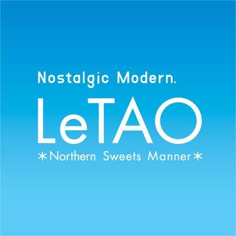

|  | ルタオとは |
親愛なる小樽の塔海と山に囲まれた自然豊かなロケーションに、 運河や歴史的建造物が今も残るノスタルジックな街並が広がる小樽。 街を歩くだけで、その魅力に包まれてしまう小樽の地にふさわしく、 これまでに無いような新しい洋菓子の文化を創りたいという創業者である 河越の強い思いからルタオのストーリーは始まりました。 幸運にも小樽の観光の中心であるメルヘン交差点にお店を構えることが決まり、 大きな塔のようなお店をつくりました。店名は「親愛なる小樽の塔」という意味の フランス語「La Tour Amitié Otaru」の頭文字に、小樽（オタル）の地名に 愛着を込めてアレンジを加えて、ルタオ（LeTAO）と名付けました。 小樽の人たちに愛され、親しまれ、いつか小樽の街のシンボルとして 皆様に語られていくような店に育てていくという誓いを込めています 素材や製法にこだわり続ける北海道産の生クリーム、小麦粉、卵を使い、原材料や製法にもこだわった 「ドゥーブルフロマージュ」は、ルタオを代表するチーズケーキです。 「全国のお客さまからご愛顧頂いているからこそ、もっとおいしくしたい」 という想いで、パティシエが世界中から素材を探しているなか、 北イタリア・ロンバルディア地方で作られた、 アンブロージ社のマスカルポーネチーズに巡り会いました。 この豊かな風味と品質なら間違いないと、素材として使うことを決めました。 とびきりの美味しさを創りだす常に「今日よりも明日美味しいこと」を 求め続けます。 馴染みのあるスイーツに、 斬新な発想でとびきりの美味しさを創りだす挑戦を続けます。 働くスタッフ全員が「生命と自然への感謝に満ち、力強く生き抜く心」を 何よりも大切にすることによって、お客様一人一人の喜びを創り、 喜びを提供し続けていくことを誓います。 ルタオが親愛なる小樽の塔であり続けるために。 |